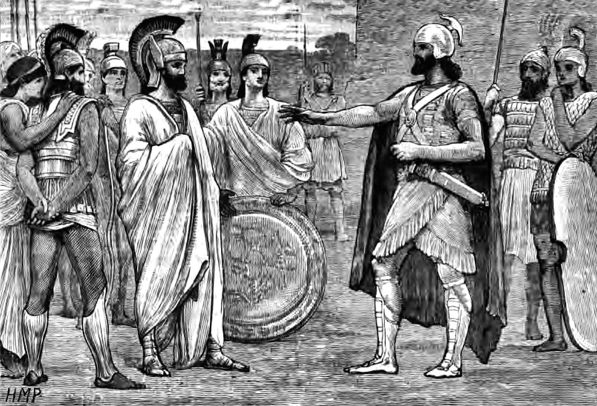

Aftermath
At the end of the Peloponnesian War, both sides (the Spartans and the Athenians) had lost considerable amount of men power, money, and other resources. Yet, Sparta became the lord of all Greece, which is why the period that came after the war is called the “Spartan Hegemony” (404 B.C. – 371 B.C.).
The Persians were going to occupy Ionia (as arranged), but the Ionians asked Sparta for help. Absurdly, the Spartans agreed to help the Ionians and in 400 B.C., Sparta invaded Asia Minor. Ionian poleis’ democracies were replaced by ten-men oligarchies. Meanwhile, there were revolts across Greece against the Spartan rule, which resulted in the Corinthian War (395 B.C. – 387 B.C.). However, Sparta also won the Corinthian War, and also reset footing in Ionia against Persia.
Persia decided to take revenge by building a massive navy of 300 ships, sailing down to Peloponnese and destroying the Spartan navy. Additionally, the Persians helped Athens rebuild its walls. Unfortunately, as soon as they had walls and a little force, they restarted war against Sparta, and decision that was immediately stopped by Artaxerxes II, the ersian king. In the year 387 B.C., the King’s Peace conference took place. Under the terms of this peace conference, every Greek polis was autonomous, Persia owned Ionia, and Persia would crush any Greek polis that go against the King’s Peace. In 60 years of war, the only thing that Greeks managed to accomplish was to weaken themselves.